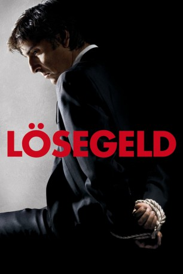
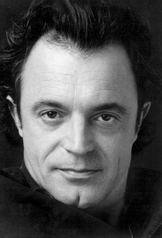
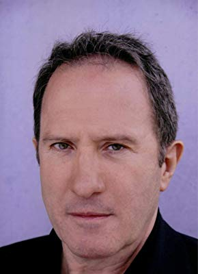
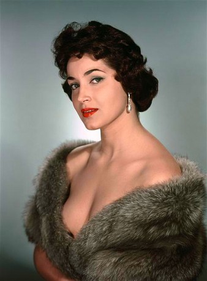
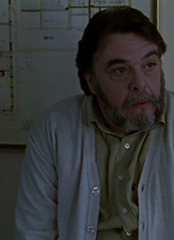

#3291 Lösegeld - Wie viel ist dein Leben wert
Alternativ: Rapt
 
 IMDB-Wertung: 6.7 / 10
IMDB-Wertung: 6.7 / 10  Metascore: 71
Metascore: 71 
Der junge Industriekapitän Stanislas Graff will gerade zur Arbeit fahren, als er von einer Bande entschlossener Krimineller auf offener Straße entführt wird. Die Gangster fordern 50 Mio. Euro Lösegeld und weder Polizei noch Medien, doch lässt sich so viel Geld nicht leicht beschaffen, und Presse wie Cops wissen schnell Bescheid. Es entspinnt sich ein erbittertes Tauziehen zwischen Entführern und Verhandlern, in dessen Verlauf manch Indiskretion an die Öffentlichkeit gerät. Als Graff schließlich frei kommt, hat sich seine Welt gründlich verändert.
Jahr: 2009
Dauer: 125 Minuten
FSK:
Land: Frankreich Studio: Square One EntertainmentTonspuren:
Untertitel: Deutsch,
Auflösung: 1080p (1920x816) Größe: 6348 MB
Genre: Drama
Regisseur: Lucas Belvaux
Drehbuch: Lucas Belvaux
Soundtrack: Riccardo Del Fra
Darsteller:
 Yvan Attal als Stanislas Graff
Yvan Attal als Stanislas Graff- Anne Consigny als Françoise Graff
-  Marc Rioufol als Le commandant Chenut
- Pierre Rochefort als Fostier
- Lucas Belvaux als L'observateur hélicoptère
-  André Marcon als André Peyrac
-  Françoise Fabian als Marjorie
- Alex Descas als Maître Walser
- Michel Voïta als Le commissaire Paoli
- Gérard Meylan als Le Marseillais
- Maxime Lefrançois als Bertaux
- Christophe Kourotchkine als Jean-Jacques Garnier
- Sarah Messens als Véronique Graff
- Julie Kaye als Martine Graff
-  Patrick Descamps als Massart
- Bertrand Constant als Le capitaine Verne
- Tania Torrens als Madame Keller
- Elef Zack als Châtelain
- Vincent Nemeth als Le juge
- Jean-Baptiste Malartre als Le Ministre
- Nicolas Pignon als Le Préfet de police
- Olivier Darimont als Mahoux
- Fabrice Jacob als Le ravisseur muet
- Corentin Lobet als Le jeune ravisseur
- Olivier Ythier als Montrouveau
- Philippe Toussaint als La Chassagne
- Circé Lethem als La bonne
- Swan Scalabre als La maîtresse de Graff
- Dominique Barneaud als
- Nordine Bekka als
- Christophe Brenière als
- Philippe Chaine als Un conseiller ministeriel
- Olivier Chenevat als
- Thierry Dauplais als
- Marc Daviot als
- Sylvie Degryse als
- Arnaud Duléry als
- Stéphane Gardien als
- Vincent Gardinier als
- Alice Girard als
- Laurent Hassid als
- Nicolas Layani als
- Didier Nobletz als
- Eric Soubelet als
- Lola Zajdermann als
Datei: X:\2009(G-M)\Lösegeld - Wie viel ist dein Leben wert (2009, FSK, 1920x816).mkv seit 03.03.2016
Festplatte: HD 2009(G-Z)-2010(A-F)
 Es gibt insgesamt 82 Filme in der Gruppe '2009(G-M)'
Es gibt insgesamt 82 Filme in der Gruppe '2009(G-M)'